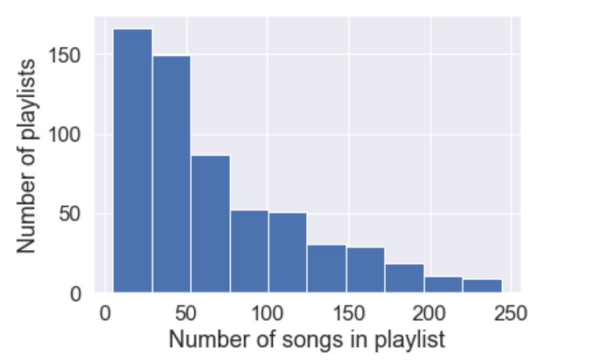
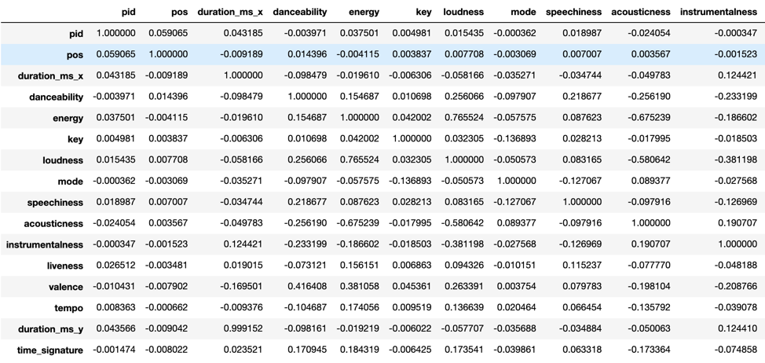
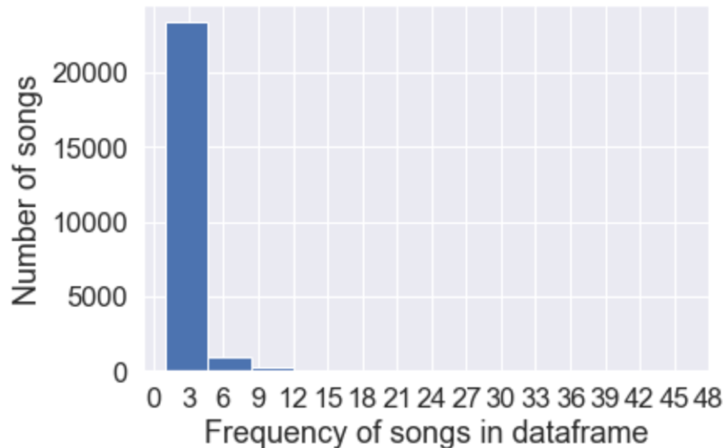
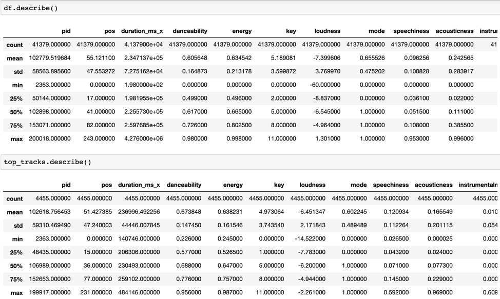
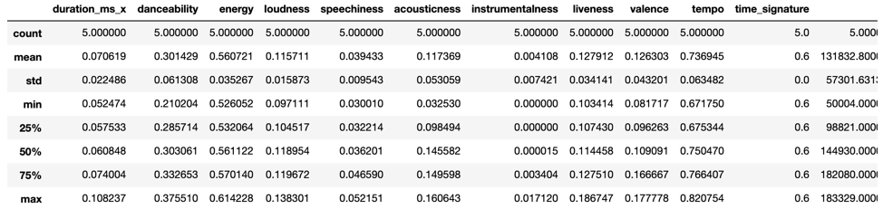
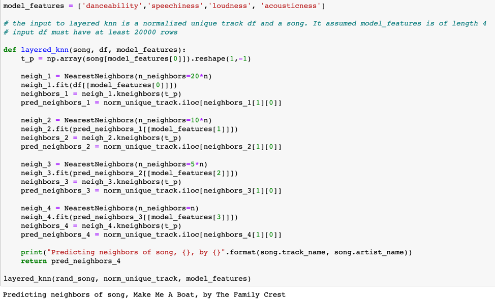
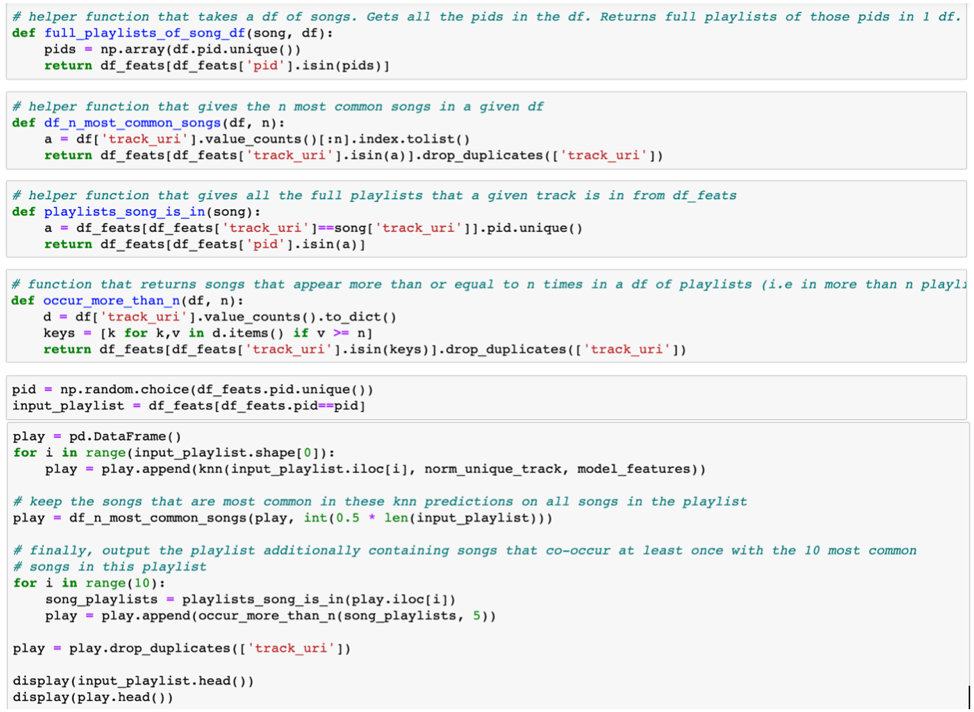

After trying our logistic regression model, we reflected on why it performed poorly. It became clear due to the below that we needed to take a different approach.

It appears that the majority of playlists have 0-50 songs, around a 100 have 75-125 and less than a 100 have 150+. Assume we build a classification model that assigns a given song, based on its input features, to a playlist from our train set. The predictors to train such a model would be the feature values (danceability, energy, etc) and the target variable would be the pid (the class). The number of observations for each class would hence be the number of songs in the playlist. Since the number of songs in each playlist is not uniform (in fact, it can be very different for playlists of 200 songs vs those of 25 songs), we need to keep in mind that the model might perform better for playlists with higher number of songs (because it would have trained on more data from that class / pid). Further along, we could think of ways to even out this inequality in training data for each "class" / pid.
We were reaffirmed of the issues with our logistic regression model when we checked the correlation of various predictors with pid and they all had correlation below 0.1. We had initially planned to predict, given the audio features, the pid that a song most likely fits. However, looking at the correlations shows that there is very low correlation between any of the predictors and the pid. This makes sense because there are a 1000 pid's in our dataset, implying a 1000 possible classes to classify a data point into. For this to be accurate, we would require immense amounts of data for each pid / class. However, as we can think of intuitively, a playlist usually does not have more than about 60 songs. Additionally, it is not surprising that classification into a specific pid would be hard, since we can create very similar playlists. Analysing the playlist of the people in this group project itself, we discovered that the 2 of us who had similar song tastes had very similar songs in our "running playlist". Hence, given a song, it would be innaccurate and imprudent to try to classify it to 1 specific playlist

Next, we performed a correlation using df.corr() (partial snapshot above) that demonstrates how there is no significant correlation between other feature variables and pid. This is likely because of the massive number of pid's ("classes"). Hence, it might make sense to simply determine, given a particular song, what other songs are closest to it in the dataset by means of kmeans or knn, and use that to predict new songs / playlists that a user may enjoy. This assumes the fact that if a user enjoys songs with a certain set of feature values, they will also enjoy another song with a similar set of predictor values. For instance, if a person enjoys jazz and most of the songs in a playlist are Jazz songs, it may be reflective of a person's love for a certain level of energy and liveliness to music. If we were able to discover a number of classical rock songs that also match those levels of energy and liveliness, it would be very acceptable to predict them (from an intuitive standpoint). In fact, part of the goal of a music prediction algorithm is to recommend previously undiscovered artists and songs to people so they can expand their musical interests. Focussing on the audio features, instead of the artists and albums, shifts the focus to the true musical nature of the song, which we consider more valid.
To make our song predictions better, we decided to focus on 2 potential approaches:
1) Identifying, in our train set, songs that were similar to each other and making groups of these similar songs. Upon receiving a song, we could assign it to a cluster in the set of clusters we made in our training data. We could then recommend a random song (or a song chosen by some method) from that cluster. Doing this for every song in an input playlist would allow us to recommend a whole new playlist with similar songs. Upon research, we discovered an unsupervised learning technique ideal for this task called K-Means Clustering. Our K-Means modelling is discussed in the Model 2 / K-Means Tab.
2) Identifying the nearest neighbor in the training set to a song that is input. Doing this for every song in an input playlist would give us the nearest neighbor to every song in that input playlist and a whole new playlist could be created only of nearest neighbors.
For KNN and K-Means, we must determine the most suitable set of predictors. Since the number of predictors is not immense and we have reasonable amount of time, we will keep as many of the predictors as possible, such that the model is not negatively impacted. We can see that duration_ms_x and duration_ms_y are almost perfectly correlated, implying one of them can be removed. Additionally, we know from the description of the features that key, pid, pos and mode do not have relations to the actual nature of the music. From our contextual understanding of the problem, it would make sense to leave these out.
To further understand what made songs popular, we started to explore the most popular tracks in our subset of 1000 playlists.

The above makes it quite clear that the majority of songs appear less than 5 times. There seems to be a small group of songs that appear more than 9 times. We explored this well-liked subset of songs. Visualizing the correlation between features for these songs, we saw no differences from the dataset at large. So, we had a look at the mean feature values across this subset and checked how those compared to the dataset at large.

We can see that the acousticness appears to be lower on average for the songs that are common across many playlists. The features that have different average and median values from the main dataframe might be the ones that are relevant in differentiating which songs are more common and hence, generally more popular (though this may, though unlikely, be an effect of having to have a smaller dataset than the million playlists). We will consider acousticness to be an important feature in deciding the goodness of fit of a predicted song going forward. Danceability, loudness and speechiness also appear to be differentiated from the original dataframe, highlighting their likely importance in people's preferences. Hence, this exploration has shown us that the features we might want to give most weight to our acousticness, loudness, danceability and speechiness.
Moving on to the KNN Modelling, we first tried a KNN model with all numeric audio features that related to the musical elements of a track. We received a satisfactory score of 5, when we tested using our testing metric with 7 of our friends.
We then explored the statistics of the feature values of our predicted playlist to better understand why it was performing the way it was.

It is evident above that the std in many of the features is somehwat high with respect to the mean/median values. Our goal with the Nearest Neighbours algorithm was to find songs that shared feature values in similar range, which has been done. However, there appears to be a reasonably large variation in the feature values across a number of the columns. Upon reflection, we realised that this is likely due to the use of Euclidian Distance with a large number of predictors. This allows large discrepancy in certain features between 2 songs to be evened out by very small discrepancies in other features. For instance, a large discrepancy in danceability might be evened out somewhat by a miniscule difference in duration_ms_x. This is not good for us as even if songs are of the same duration, large difference in danceability probably suggests they are not very similar. We considered a few ways to possibly fix this:
Firstly, Running a layered Nearest Neighbours model such that a large number of nearest neighbors were determined at the first level based on a single, very relevant feature. Next, the NN algorithm would again be run on that subset and with a another next-most-relevant feature and so on. Such an algorithm might make sure that the discrepancy between any specific features is not very much. Additionally, we could focus the model on the most important features (which have been previously determined when we built the top_tracks df). Secondly will also build a model identical to the one above, but using only the most relevant features. With lesser features, it is less likely for big discrepancies in certain features to be balanced out by miniscule ones in other ones, so this might be more accurate than NN on all the features we used above.
The layered KNN model actually performed very poorly (test score below 3) and below we evaluate why.

We concluded that this performs poorly because it is too restrictive at every step. For instance, if given a rap song that has uncharacteristically low danceability, but is otherwise very adherant to other rap songs of its kind, this model would falter at the first step because it would eliminate most rap songs that are otherwise melodically similar to this because of their generally higher danceability. Hence, this model is highly reliant on obtaining the perfect hierarchy of feature importance, which is extremely difficult. We tried a number of different combinations of feature hierarchies and determined that there are always outliers, like this example, that will make this model insufficient. This model also made us reflect on how we could have considered multiple features together at every layer of this layered KNN model and explicated the importance of thinking of certain features together as being an important feature in itself. For instance, high energy or high speechiness in themselves don't necessaily define a genre, but high energy and high speechiness might define a lot of rap music or another genre. Hence, the consideration of multiple features together is something we planned to assimilate into our model in the future.
The KNN model that used just 4 features actually performed extremely well, taking us up to a test score of over 7, as desired. We received an 8 from a friend who had previously given us a 5 on the initial model. We ended up averaging 7.5 across 10 friends for this model and agreed that it was a better approach than the previous models. It is also understandable how the exclusion of less melodically relevant features like duration would have positively affected the model. Additionally, we can see in the predicted songs for this model that the time-signature varies across the songs, compared with the initial model where it did not seem to vary. This is likely because time_signature has discrete values that vary by 0.2. Hence, the use of Euclidian distance would have forced NN to pick neigbors with the same time_signature (because different time_signature would have caused huge increase in distance), even though time signature is not a reflection on the melodic nature of the songs. We are satisfied with this model for predicting a set of 10 songs similar to a given song. We will now move on to the next task of actually creating a playlist from a given playlist.
Finally, to actually predict the playlist, we took the set of 5 closest neighbors for every song in an input playlist and added them all to one dataframe. We then found the top half of songs based on number of times they occur in the cumulated dataframe.
Then, for the 10 top songs in this set, we found songs that co-occur with them in playlist more than 5 times, across our whole dataset of 1000 playlists. We added those songs to the base dataframe and output the combined dataframe as our final playlist.
We received a test score of 9 from our friends on this model! Below is how it is built:

Notebook: KNN_spotify.ipynb